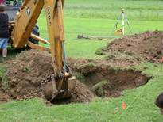

AMBE 101 :: Lecture 30 :: BIOREMEDIATION

Introduction
In the twentieth century, the ever increase in the global human
population and industrialization led to the exploitation of natural resources. The increased usage of heavy metals
and its disposal in the ecosystems around the world and also in India is becoming an important ecological issue to be take into our consideration. This has indiscriminate release of heavy metals into the ecosystem has already posing air, water and soil pollution causing various
uncompromising, deleterious and fatal effects on humans and the
stability of the ecosystems.
Soil and water are the most important natural resources for all living beings including human beings for survival, which are recently becoming highly polluted. As a result of this, several living forms which are better suited to the polluted environment have out bursted causing ecological imbalance. Unlike soil, water body has its own ability to maintain its natural state through process called self purification. However when the discharge of pollutants is heavy, the process of self purification of water bodies is adversely affected and the water remains polluted.
Unlike organic contaminants,
heavy metals are not biologically degradable, and
therefore can persist in the environment for a long
duration. The term ‘heavy metal’ can be explained as 1) Relatively
abundant in the earth’s crust; 2) Reasonable extraction
and usage; 3) Having direct contact with people; and 4)
Toxic to humans. Heavy metals
 are the metals which have a specific gravity of more than 4 or more than 5 (Anonymous, 1964; Nieboer and Richardson, 1980). Some important heavy metals are Zinc (Zn), Chromium (Cr), Cadmium (Cd), Arsenic (As) etc.,
are the metals which have a specific gravity of more than 4 or more than 5 (Anonymous, 1964; Nieboer and Richardson, 1980). Some important heavy metals are Zinc (Zn), Chromium (Cr), Cadmium (Cd), Arsenic (As) etc.,
Bioremediation can be defined as any process that uses microorganisms, fungi, green plants or their enzymes to return the natural environment altered by contaminants to its original condition. Bioremediation may be employed to attack specific soil contaminants, such as degradation of chlorinated hydrocarbons by bacteria. An example of a more general approach is the cleanup of oil spills by the addition of nitrate and/or sulfate fertilisers to facilitate the decomposition of crude oil by indigenous or exogenous bacteria.
Mycoremediation is a form of bioremediation that uses fungi to reduce the level of contamination in a given environment. Fungi can release specific enzymes and acids that break down the major components of plant fiber. The accumulation of waste is directly proportional to population and as our population grows scientists will be under more pressure to find ways to eliminate contaminants from our environment. Bioremediation microbes will continue to be used in an attempt to return our polluted environments to their original state. Corning, Barnstead, and BD supply products used by those researching bioremediation.
Bioremediation technologies can be generally classified as in situ or ex situ. In situ bioremediation involves treating the contaminated material at the site while ex situ involves the removal of the contaminated material to be treated elsewhere. Some examples of bioremediation technologies are bioventing, landfarming, bioreactor, Composting, bioaugumentation, rhizofiltration, and biostimulation.
BIOREMEDIATION STRATEGIES
Different techniques are employed depending on the degree of saturation and aeration of an area. In situ techniques are defined as those that are applied to soil and groundwater at the site with minimal disturbance. Ex situ techniques are those that are applied to soil and groundwater at the site which has been removed from the site via excavation (soil) or pumping (water). Bioaugmentation techniques involve the addition of microorganisms with the ability to degrade pollutants.
In situ bioremediation
These techniques are generally the most desirable options due to lower cost and less disturbance since they provide the treatment in place avoiding excavation and transport of contaminants. In situtreatment is limited by the depth of the soil that can be effectively treated. In many soils effective oxygen diffusion for desirable rates of bioremediation extend to a range of only a few centimeters to about 30 cm into the soil, although depths of 60 cm and greater have been effectively treated in some cases. The most important land treatments are:
Incineration Excavation

Bioventing
Is the most common in situ treatment and involves supplying air and nutrients through wells to contaminated soil to stimulate the indigenous bacteria. Bioventing employs low airflow rates and provides only the amount of oxygen necessary for the biodegradation while minimizing volatilization and release of contaminants to the atmosphere. It works for simple hydrocarbons and can be used where the contamination is deep under the surface.
In situ biodegradation
Involves supplying oxygen and nutrients by circulating aqueous solutions through contaminated soils to stimulate naturally occurring bacteria to degrade organic contaminants. It can be used for soil and groundwater. Generally, this technique includes conditions such as the infiltration of water-containing nutrients and oxygen or other electron acceptors for groundwater treatment.
Biosparging.
Biosparging involves the injection of air under pressure below the water table to increase groundwater oxygen concentrations and enhance the rate of biological degradation of contaminants by naturally occurring bacteria. Biosparging increases the mixing in the saturated zone and there- by increases the contact between soil and groundwater. The ease and low cost of installing small-diam- eter air injection points allows considerable flexibility in the design and construction of the system.
Bioaugmentation.
Bioremediation frequently involves the addition of microorganisms indigenous or exogenous to the contaminated sites. Two factors limit the use of added microbial cultures in a land treatment unit: 1) nonindigenous cultures rarely compete well enough with an indigenous population to develop and sustain useful population levels and 2) most soils with long-term exposure to biodegradable waste have indigenous microorganisms that are effective degrades if the land treatment unit is well managed.
Ex situ bioremediation
These techniques involve the excavation or removal of contaminated soil from ground.
Landfarming
Is a simple technique in which contaminated soil is excavated and spread over a prepared bed and periodically tilled until pollutants are degraded. The goal is to stimulate indigenous biodegradative microorganisms and facilitate their aerobic degradation of contaminants. In general, the practice is limited to the treatment of superficial 10–35 cm of soil. Since landfarming has the potential to reduce monitoring and maintenance costs, as well as clean-up liabilities, it has received much attention as a disposal alternative.
Composting
Is a technique that involves combining contaminated soil with nonhazardous organic amendants such as manure or agricultural wastes. The presence of these organic materials supports the development of a rich microbial population and elevated temperature characteristic of composting.
Biopile
Are a hybrid of landfarming and composting. Essentially, engineered cells are constructed as aerated composted piles. Typically used for treatment of surface contamination with petro- leum hydrocarbons they are a refined version of landfarming that tend to control physical losses of the contaminants by leaching and volatilization. Biopiles provide a favorable environment for indigenous aerobic and anaerobic microorganisms.
Bioreactors
Slurry reactors or aqueous reactors are used for ex situ treatment of contaminated soil and water pumped up from a contaminated plume. Bioremediation in reactors involves the processing of contaminated solid material (soil, sediment, sludge) or water through an engineered containment system. A slurry bioreactor may be defined as a containment vessel and apparatus used to create a three-phase (solid, liquid, and gas) mixing condition to increase the bioremediation rate of soil- bound and water-soluble pollutants as a water slurry of the contaminated soil and biomass (usually indigenous microorganisms) capable of degrading target contaminants. In general, the rate and extent of biodegradation are greater in a bioreactor system than in situ or in solid-phase systems because the contained environment is more manageable and hence more controllable and predictable. Despite the advantages of reactor systems, there are some disadvantages. The contaminated soil requires pre treatment (e.g., excavation) or alternatively the contaminant can be stripped from the soil via soil washing or physical extraction (e.g., vacuum extraction) before being placed in a bioreactor.
Advantages of bioremediation
• Bioremediation is a natural process and is therefore perceived by the public as an acceptable waste treatment process for contaminated material such as soil. Microbes able to degrade the contaminant increase in numbers when the contaminant is present; when the contaminant is degraded, the biodegradative population declines. The residues for the treatment are usually harmless products and include carbon dioxide, water, and cell biomass.
• Theoretically, bioremediation is useful for the complete destruction of a wide variety of contaminants. Many compounds that are legally considered to be hazardous can be transformed to harmless products. This eliminates the chance of future liability associated with treatment and disposal of contaminated material.
• Instead of transferring contaminants from one environmental medium to another, for example, from land to water or air, the complete destruction of target pollutants is possible.
• Bioremediation can often be carried out on site, often without causing a major disruption of nor- mal activities. This also eliminates the need to transport quantities of waste off site and the poten- tial threats to human health and the environment that can arise during transportation.
• Bioremediation can prove less expensive than other technologies that are used for clean-up of hazardous waste.
Disadvantages of bioremediation
• Bioremediation is limited to those compounds that are biodegradable. Not all compounds are susceptible to rapid and complete degradation.
• There are some concerns that the products of biodegradation may be more persistent or toxic than the parent compound.
• Biological processes are often highly specific. Important site factors required for success include the presence of metabolically capable microbial populations, suitable environmental growth conditions, and appropriate levels of nutrients and contaminants.
• It is difficult to extrapolate from bench and pilot-scale studies to full-scale field operations.
• Research is needed to develop and engineer bioremediation technologies that are appropriate for sites with complex mixtures of contaminants that are not evenly dispersed in the environment.
Contaminants may be present as solids, liquids, and gases.
• Bioremediation often takes longer than other treatment options, such as excavation and removal
of soil or incineration.
• Regulatory uncertainty remains regarding acceptable performance criteria for bioremediation.
There is no accepted definition of “clean”, evaluating performance of bioremediation is difficult, and there are no acceptable endpoints for bioremediation treatments.
| Download this lecture as PDF here |